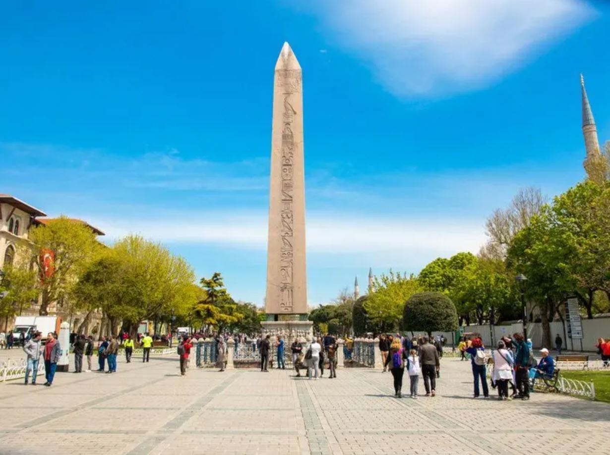

Sultan Ahmet Meydanı
Sultan Ahmet Meydanı Hakkında
Sultan Ahmet Meydanı Hakkında
Günümüze çok az kalıntıları kalan Bizans devri önemli yapıları ve abideleri Hipodrom çevresinde inşa edilmişti. “Büyük Saray” diye bilinen İmparatorluk Sarayı; hipodromun yanından başlar, aşağılara, deniz kenarına kadar uzanırdı. Bu saraydan günümüze bir büyük salonun yer mozaik panosu gelebilmiştir. Şehrin en önemli meydanı Agusteion ve burası ile cadde arasında Milerium Zafer Takı bulunurdu. Cadde, Roma’ya kadar uzanan yolun başlangıcı idi ve ilk kilometre taşı da buradaydı. Hamamlar, mabetler; dinî, kültürel, idare ve sosyal merkezler bu civara yerleşmişlerdi. Semt, Bizans ve Türk devirlerinde de merkezî önemini devam ettirmiştir. İstanbul’un en önemli abideleri Ayasofya, Sultan Ahmet Camii, Türk ve İslam Eserleri Müzesi, Yerebatan Sarnıcı burada, hipodromun çevresindedir. Şehrin ana caddeleri (aşağı limana inen ve batıya şehir surlarına doğru gidenler) hipodromdan başlar ve yamaçları takip ederdi. Yol kenarları ticari kuruluşlar ve ikametgâhlarla çevrili idi. Yan yollar dar ve bazıları basamaklarla yokuş aşağı uzanırlardı. Anayol kaldırımları bazen iki katlı, galerili inşa edilmişlerdi.
British Museum'da sergilenen bir kompozisyondan Sultanahmet Meydanı'na ait detay, 1553
Roma İmparatorluğu ve sonradan Bizans İmparatorluğu devrinde hipodrom şehrin toplantı, eğlence, heyecan ve spor merkezi olarak 10. yüzyıla kadar önemini sürdürmüştü. Araba yarışları yanında, müzisyen toplulukları, dansözler, akrobatlar, vahşi hayvanlarla kavga gösterileri, toplantılar yapılırdı. Bütün bu faaliyetler için ise Roma devrinde bol tatil günleri mevcuttu. Hipodrom, Bizans döneminde devlete karşı ayaklanmaların da merkezi olmuştur. İustianus'un saltanatında yaşanan Nika Ayaklanması bunlardan biridir ve Komutan Belisarios'un yine burada kıstırdığı ayaklanmacılardan 30.000 kadarını öldürmesiyle bastırılmıştır. Daha sonra 1185'te İmparator I. Andronikos'un linç edilmesi de burada olmuştur.[2]
1880 tarihli Hipodrom Meydanı. Ön planda Dikilitaş ve arka planda Ayasofya Camii.
Dev ölçüde bir U harfi şeklinde olan hipodromun doğu uzun tarafında, damında dört bronz at bulunan, balkon şeklinde, imparator locası yer alırdı. Ortada hipodromun kum kaplı sahasını ikiye bölen, arabaların etrafında yarıştığı alçak bir duvar, bu duvarın üstünde de imparatorluğun çeşitli yerlerinden getirilen abideler ve meşhur at yarışçıları ile atlarının heykelleri bulunurdu. Şöhretli bir araba yarışçısı akla gelebilecek her türlü maddi olanak içinde yüzerdi. Yarışçılar yeşil-mavi-beyaz-kırmızı gibi politik güçleri de olan takımlara ayrılmışlardı. Zaman zaman yarışlara politika karışır, karşılıklı güçlerin mücadeleleri korkunç katliamlara dönüşebilirdi. Hipodrom günümüze zemini 4-5 metre yükselmiş ve kalabilmiş üç abide ile gelmiştir.
Bunlar Örme Dikilitaş, Mısır’dan getirilen Obelisk ve Delfi'deki Apollon tapınağından getirtilen Yılanlı Sütun'dur. Osmanlı devrinde, bu meydanda bazen, eski günlerindeki zengin gösteriler gibi, çeşitli festival ve gösteriler tertiplenmişti. Hipodrom’un batısında, Sultanahmet Camii’nin karşısında yer alan Kanuni'nin sadrazamı İbrahim Paşa Sarayı 16'ncı yy. zengin ve tipik özel sarayların günümüze gelen tek örneğidir. Bu güzel yapı Türk ve İslam Eserleri Müzesi olarak ziyarete açıktır. Hipodromdan günümüze yuvarlak güney ucu kalmıştır. Bu büyük kemerlerle donatılmış tuğla bir yapıdır. Sonraki devirlerde Hipodromun taş blokları ve sütunlarının tamamı başka yapılarda kullanılmıştır. Hipodrom girişi sağındaki parkta 4-5 yy. ait özel saray kalıntıları, az ilerisinde de Aya Öfemiya Bizans Kilisesi'nin kalıntıları bulunmaktadır.
Osmanlı zamanında da Yeniçeri isyanları bu bölgede yaşanır, kırk gün kırk gece süren şehzade sünnet düğünleri ve şenlikler burada yapılırdı. İstanbul'da Halide Edip'in işgale karşı konuşma yaptığı 1920 Sultanahmet Mitingi de burada yapılmıştır.